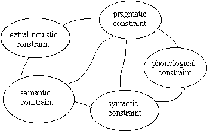

Machine: Sparc, PIM Environment: UNIX, PIMOS Language: C, KL1 Source Code: 250KB, 500KB Documents: Manual (English)
The declarative semantics of a program is given by capturing the degree of violation of constraint in terms of potential energy. The energy gives rise to a dynamics, which controls computation so as to process important information only. This dynamical semantics could support partial information processing under the limitation of computational resources.
DP will give rise to a heterarchy consisting of various modules of constraints. In particular, we are conducting a basic research on a natural language processing system which looks like:

Two different implementations are going on. One is written in C, runs in UNIX. and is equippe with a graphic interface based on X Window. This program runs on Macintosh, with a different graphic interface. The other version in written in KL1 and runs in PIMOS. This latter version is not yet equipped with dynamics, because the emphasis is in parallel implementation.